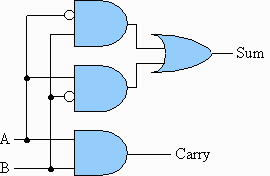

| Problem G: | To Carry or not to Carry |
|
Time Limit: 1 second Memory Limit: 32 MB |
|
|  |
6+9=15 seems okay. But how come 4+6=2? You see, Mofiz had worked hard throughout his digital logic course, but when he was asked to implement a 32 bit adder for the laboratory exam, he did some mistake in the design part. After tracing the design for half an hour, he found his flaw!! He was doing bitwise addition but his carry bit always had zero output. Thus, |
4 = 00000000 00000000 00000000 00000100 +6 = 00000000 00000000 00000000 00000110 ---------------------------------------- 2 = 00000000 00000000 00000000 00000010Its a good thing that he finally found his mistake, but it was too late. Considering his effort throughout the course, the instructor gave him one more chance. Mofiz has to write an efficient program that would take 2 unsigned 32 bit decimal numbers as input, and produce an unsigned 32 bit decimal number as the output adding in the same was as his circuit does.
4 6 6 9
2 15
Problem setter: Monirul Hasan (Tomal), CSE Dept, Southeast University, Bangladesh
"that you used cut and paste there is really nerdy." -- goose
"really? i use cut and paste all the time." -- trip
Collected from: nerd quotes